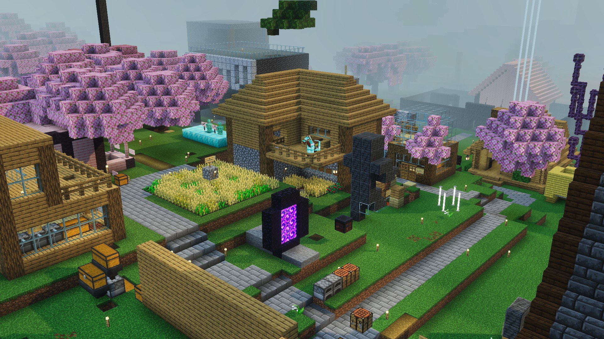
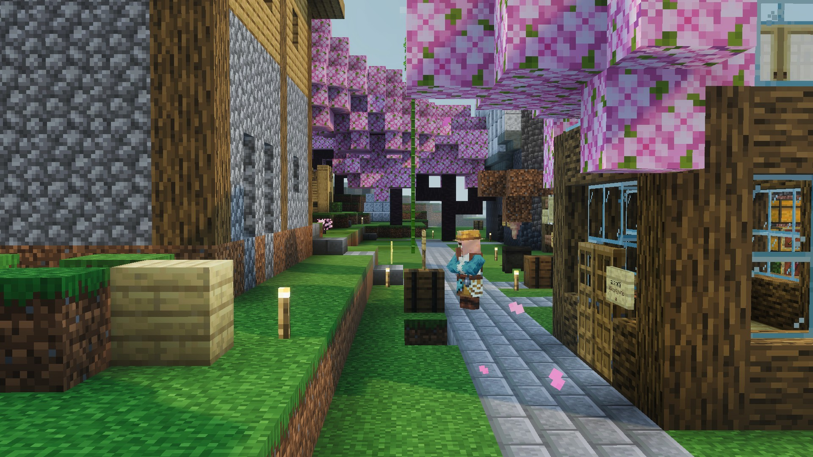
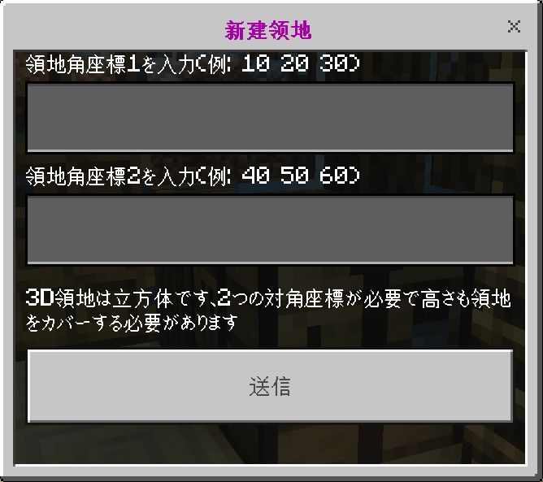
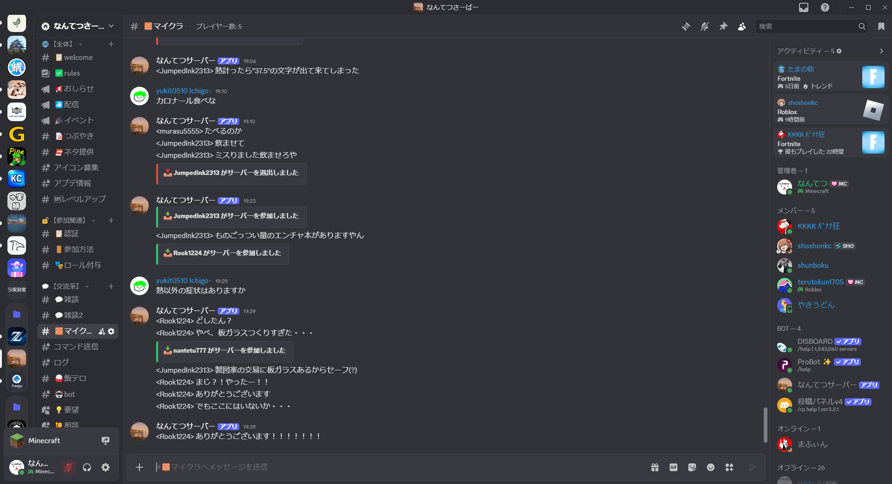

サーバーに参加したら、まずは以下のステップで安全かつ快適な生活基盤を整えましょう。
サーバーに参加すると、**集合地点（スポーン）**に到着します。周囲の看板を読んでサーバーの雰囲気を理解したら、**安全な場所**に移動しましょう。建築はワールドの「オーバーワールド」で行ってください。
コマンド /warp で、様々な公共施設への移動も可能です。

**他のプレイヤーの拠点から最低5ブロック離れた場所**を見つけ、自分の拠点を決めます。この時、チャットで「近くに誰かいますか？」と確認すると親切です。
拠点には、**家とチェスト**を早めに設置しましょう。

建築物が完成したら、荒らし対策のため**必ず自分の家を保護*しましょう。
コマンド: **/tty** で設定できます。設定後、/sethome で家を登録し、/homeで家にテレポートできます。
🚨 **注意: 土地保護プラグインは一部日本語がおかしい箇所がございます。原因がわかり次第、修正する予定です。**

Discordに参加して、コミュニティと交流を深めましょう。また、**もう一度サーバーのルールと利用規約**を確認し、違反がないかチェックすることが大切です。

A: 土地保護は、**/tty コマンドで設定します**。この設定により、自動的に指定した座標内が保護されます。
保護範囲内では、他のプレイヤーによる破壊やチェストの操作はできません。保護範囲を確認するには、/tty で見てください（詳細はコマンド一覧を参照）。
A: 現状使い道はないですが、将来的に機能を追加する可能性はあります。
A: はい、使用可能です。長い移動のストレスを軽減するため、便利なテレポート機能を用意しています。
/tpa [プレイヤー名]: 他のプレイヤーにテレポートを要求します。/warp: 運営が設定した主要な場所へ移動します。/home: 自分で設定した拠点に帰宅します。A: 荒らし行為を発見した場合、**証拠（スクリーンショットや動画）を確保**し、Discord、またはゲーム内で運営に連絡してください。
運営はログを確認し、**ロールバック機能**で被害を修復します。被害に遭ってもすぐに諦めず、必ず報告してください。
A: 資源ワールドはこのサーバーにはございません。
ご不明な点は、Discordで質問いただくか、お問い合わせフォームからご連絡ください。